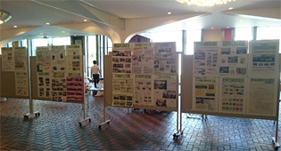

|
|
||||||||||||||||||||||||||
第53回埼玉県消費者大会実行委員会 10月12日(木)、埼玉会館にて｢自ら考え行動する消費者になろう～平和で安心してくらせる社会へ～｣をスローガンに、第53回埼玉県消費者大会を開催、全体会に620人・分科会に393人が参加しました。 午前中の全体会の記念講演の様子  実行委員会団体の活動紹介をパネル展示
※第53回埼玉県消費者大会アピールはこちら【PDF：160KB】 大ホール・小ホールと2つの会議室で開かれ、393人が参加しました。｢飯館村のお母ちゃんたち 土とともに｣の上映、助言者の報告、各団体の取り組みや事例報告、参加者の意見交流、質疑がおこなわれ、それぞれ課題を深めました。 ＜第1分科会：食＞ 90人参加
＜第2分科会：消費者課題＞ 58人参加
＜第3分科会：社会保障＞ 49人参加
第4分科会：映画＞ 196人参加
|
||||||||||||||||||||||||||